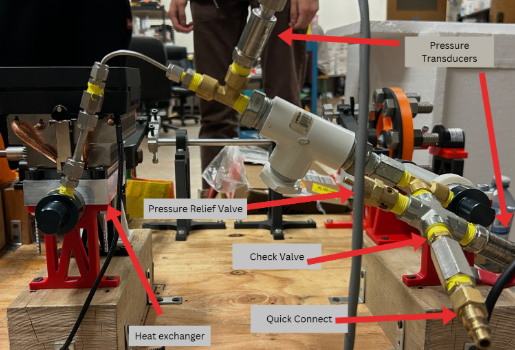
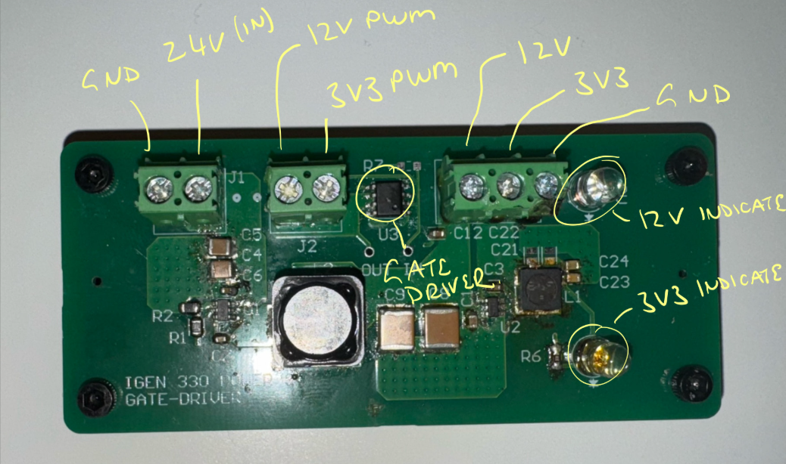
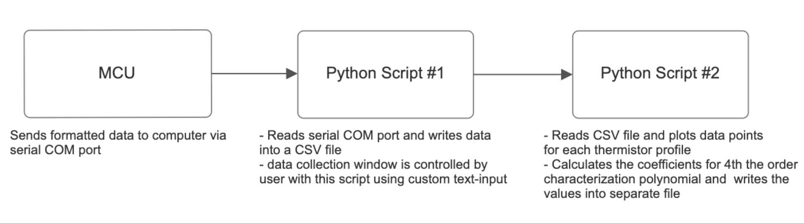

Stirling Refrigerator for Vaccine Storage
Overview
This project focused on developing a sustainable, reliable, and portable vaccine cooling system capable of maintaining a stable 2-8 °C storage temperature for use in remote communities. The design leveraged a Stirling refrigeration cycle, a clean and refrigerant-free technology, to provide consistent cooling without relying on toxic or environmentally harmful refrigerants.
Top View
Front View
My Contributions
For this project, I designed and implemented multiple hardware and software/firmware components. Each of these components are listed are described below:
Custom Gate Driver & Power Board PCB
This board is used to amplify a PWM signal from 3V3 to 12V (fed into a low-side mosfet gate), and it also functions as a DC voltage regulation device. The generated 12V and 3V3 voltage rails are also used to supply different off-board electronic components (MCU, sensors, and display).
The gate driver and voltage regulation functions are integrated onto the same board due to space constraints.
Schematic
PCBA Mounted on Chassis
To control ringing effects at the mosfet gate, I needed to implement a gate resistor, placed as close to the gate as possible. I tested different resistances and chose the most optimal value based on the measured gate driver output signals.
0Ω Gate Resistor
15Ω Gate Resistor
Motor Driver Circuit, high-level diagram:
The refridgeration mechanism is controlled by single MOSFET in a low-side driving configuration for unidirectional brushed DC motor speed control, chosen for its simplicity and because it fully meets the requirements of our application.
Automated Thermistor Calibration Setup
With a small temperature range and high accuracy demands, the system’s temperature sensors (NTC thermistors) must be calibrated and customly-fit to the 2–8 °C range. This is done by collecting thermistor resistance and environment temperature data (measured using a digital temperature sensor), plotting these data points, then fitting a 4th order polynomial to characterize the thermistor. The calibration method provides a more accurate temperature–resistance profile than using the thermistor Beta value with the Beta equation.
To ensure high calibration accuracy, many data points are collected over the sampling period (determined by magnitude of environment temperature change and rate of temperature change).
Setup Overview
This setup uses the following hardware components:
- Adafruit TMP117 Module (digital temperature sensor)
- ESP32 Dev Module
- ADC Multiplexer
- 10k NTC thermistors (for this example)
- 10k Resistors
Setup Diagram - Thermistors in voltage divider configuration
Functional Description
- As the environment temperature slowly changes from A to B, the thermistors and TMP117 temperatures slowly adjust. Throughout this process, at a predetermined sampling period, the thermistor’s resistance is calculated with the measured voltage through the ADC MUX and the MCU’s onboard ADC channels, and the environment temperature is measured using the TMP117 and relayed to the MCU through I2C.
- The ADC MUX allows the number of thermistors to exceed the number of onboard ADC channels, eliminating hardware resource constraints.
- Each ADC MUX channel/onboard ADC channel measures a single thermistor. Therefore, depending on hardware setup, a single calibration process can scale up to numerous thermistors, only constrained by the number of ADC channels available, saving time.
- The thermistor profiling is achieved using the MCU’s onboard firmware and separate Python scripts. This workflow is detailed below:

Setup Diagram - Thermistors in voltage divider configuration
After the data collection period, the Python scripts automatically organize the data points, generate respective temperature curves, and profile each thermistor with custom 4th-order polynomial characteristic equations.
Sensor Integration
This project utilized sensors to actively measure temperature, pressure, RPM, and crank-angle to monitor thermal, pneumatic, and mechanical conditions.
Collected data was used to characterize performance (such as theoretical efficiency) and provide control feedback.
Pressure Measurement: Pressure Transducers
ddd The system uses two SPTD25-20-0500H pressure transducers to measure the gauge pressure for each piston. With a two-wire interface, the PTs (pressure transducers) output between 4-20mA of current that is proportional to the gauge pressure in the 0-500 psig linear region.
Setup Diagram - Thermistors in voltage divider configuration